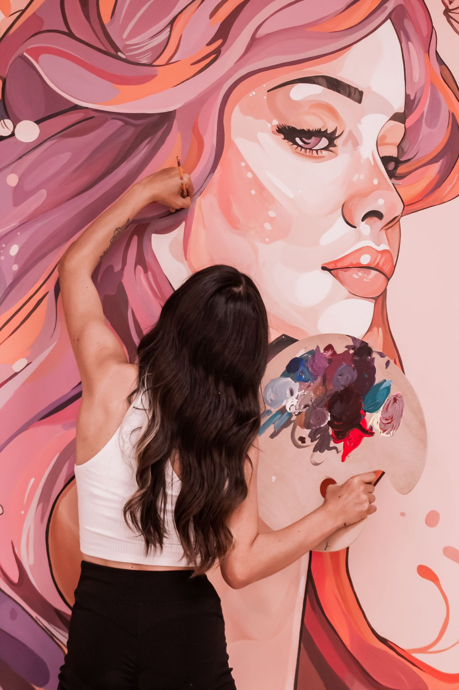
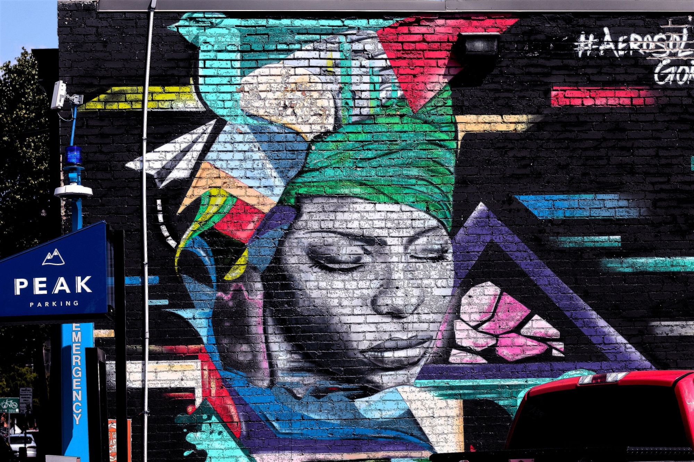
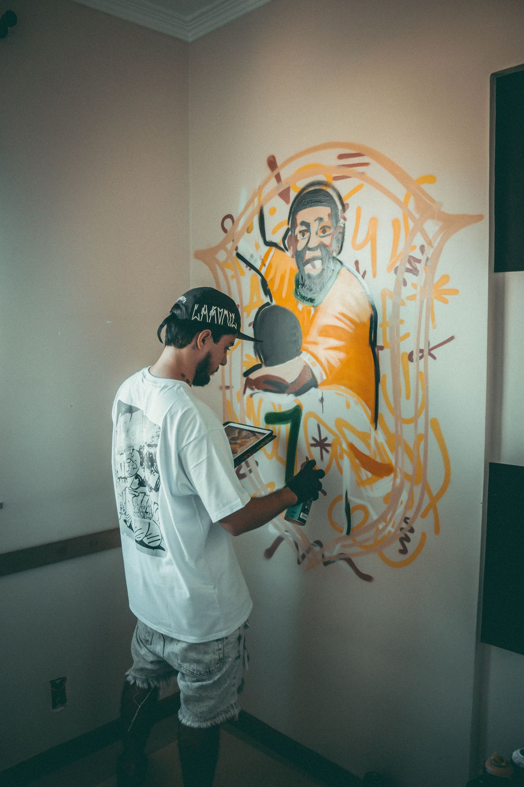
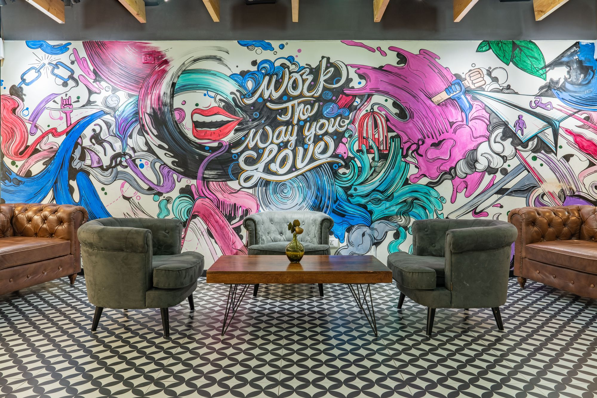
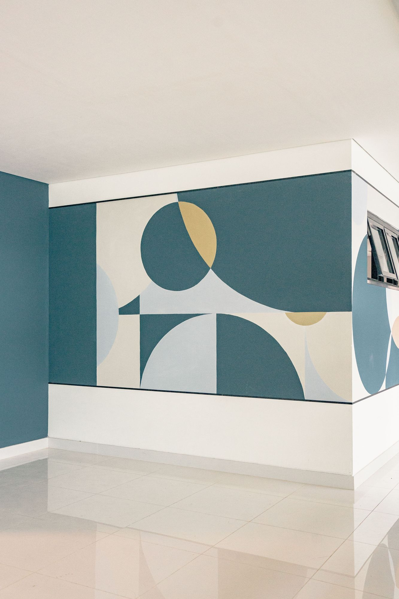
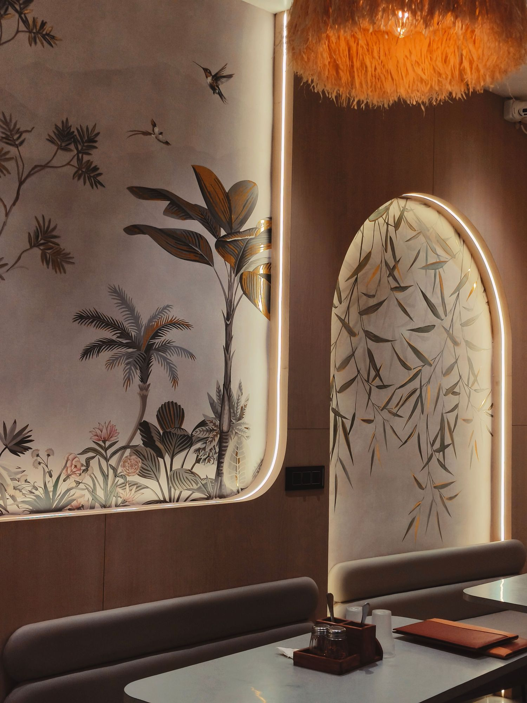
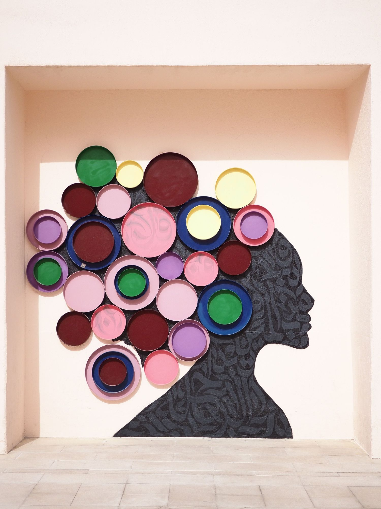
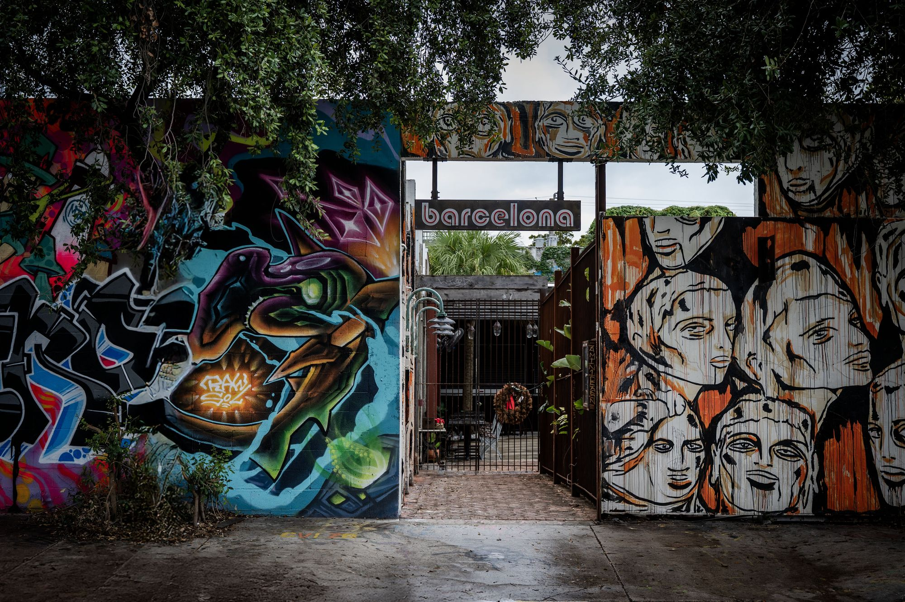
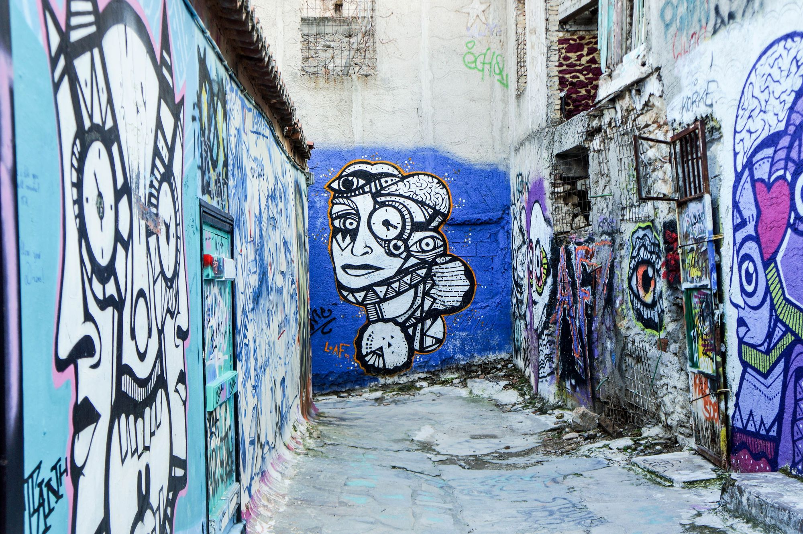

- Home
- Wall Art
Wall art services
Wall Art Services
Eight distinct ways to transform a wall — from hand-painted murals and lettering to dimensional installations and art placement. Each section explains what the service involves, where it works best and what to plan for.


Hand-Painted Murals
A hand-painted mural is artwork applied directly to the wall with brush, roller or aerosol, so it becomes part of the architecture rather than something hung on it. Murals can be photographic portraits, illustrated scenes, characters, landscapes or loose painterly compositions.
Because a mural is made on site, its scale, palette and level of detail can be tuned to the exact wall — whether that is a feature wall behind a sofa or the full side of a building.
Well suited to
- Living rooms, bedrooms and hallways
- Restaurant and café feature walls
- Building sides and gable ends
- Schools, studios and community spaces
Points to plan for
- Wall condition and any cracks or damp
- Viewing distance and sightlines
- Furniture or fixtures in front of the wall
- Ventilation and access while painting

Custom Commissioned Wall Art
A commission starts with you rather than a catalogue. The concept is developed from your references — a brand story, a place, a person, a memory or a collection — and refined until it feels unmistakably yours.
Commissions can take the form of a painted mural, a lettering piece, a mixed-media installation or artwork made for a specific frame or niche. The concept is shared for review before anything is committed to the wall.
Well suited to
- Brand and hospitality interiors
- Personal tributes and family stories
- Neighbourhood and heritage themes
- Gifts and milestone spaces
Points to plan for
- Reference images and words you love
- Who will approve the concept
- Any brand guidelines or colours
- Rights to use supplied photographs

Lettering, Typography & Calligraphy Walls
Words can be the artwork. Lettering walls range from expressive brush calligraphy that dissolves into texture, to hand-painted sign-style script and bold statement quotes that sit inside an illustrated composition.
Good lettering is about rhythm and spacing as much as the words themselves, so layouts are drawn to the wall’s real proportions and checked for legibility from where people will stand or sit.
Well suited to
- Office culture and values walls
- Bars, cafés and stairwells
- Shop fronts and entrances
- Event and gathering spaces
Points to plan for
- Exact wording and spelling sign-off
- Language and character sets
- Reading distance and letter height
- Contrast against the wall colour

Geometric & Abstract Walls
Geometric and abstract walls use shape, colour and line to give a space structure. A painted band can lower a tall ceiling visually, an arc can soften a hard corner, and a dense pattern can make a plain lobby feel designed.
This style suits people who want impact without imagery, and it works especially well when the palette is pulled from the furniture, flooring or brand colours already in the room.
Well suited to
- Homes, lobbies and reception areas
- Fitness, wellness and learning spaces
- Corners, curves and awkward walls
- Calm or high-energy palettes alike
Points to plan for
- Crisp edges need smooth surfaces
- How the pattern turns corners
- Switches, vents and sockets
- Balance with nearby furniture

Botanical & Decorative Feature Walls
Inspired by painted wallpapers and garden murals, botanical feature walls layer palms, foliage, flowers and birds into an immersive backdrop. Metallic or gold accents can be added to catch the light at different times of day.
They pair naturally with architectural details such as arches, niches and integrated lighting, turning a dining booth or bedroom wall into a quiet focal point.
Well suited to
- Restaurants and private dining
- Bedrooms and dressing rooms
- Spa, salon and wellness interiors
- Arched niches and alcoves
Points to plan for
- Lighting placement and glare
- Fine detail at close viewing range
- Metallic finishes under warm light
- Seating backs rubbing the wall

Dimensional & Mixed-Media Installations
Some walls benefit from depth. Mixed-media installations combine a painted ground with raised, layered or attached elements — discs, panels, cut shapes or sculptural pieces — so the artwork changes as light moves across it.
Because these pieces are fixed to the wall, the substrate, fixings and the weight of each element are considered as part of the design.
Well suited to
- Retail windows and feature niches
- Courtyards and sheltered exteriors
- Reception and lobby walls
- Photo and social moments
Points to plan for
- What the wall can safely support
- Cleaning around raised elements
- Indoor or sheltered outdoor use
- Clearance from walkways

Exterior & Street-Style Art
Exterior walls are seen by everyone who passes. Street-style pieces — aerosol portraits, characters, graffiti-inspired letterforms and drawn faces — can give a building, alley or courtyard entrance a strong local identity.
Outdoor work brings extra considerations: weather, sunlight, the surface’s age and porosity, safe access at height and, in many places, permission from the property owner or local authority. These are reviewed early, before a design is finalised.
Well suited to
- Building sides and gable walls
- Courtyards, gates and entrances
- Alleys and laneways
- Car parks and service walls
Points to plan for
- Owner and local permissions
- Sun, rain and seasonal timing
- Access equipment and safety
- Neighbouring buildings and passers-by

Art Styling, Curation & Placement
Not every wall needs to be painted. Art styling is about choosing, arranging and positioning artwork you already own — or pieces you are sourcing — so a wall reads as one confident composition rather than a scatter of frames.
Styling can also tie a mural into the rest of the room, using furniture placement, lighting direction and colour echoes so the painted wall and its surroundings feel planned together.
Well suited to
- Gallery walls and picture groupings
- Staircases and long corridors
- New homes and refurbished offices
- Rooms that pair art with a mural
Points to plan for
- Hanging heights and spacing
- Wall type and suitable fixings
- Frame and mat consistency
- Lighting angle and reflections
Side by side
Choosing an approach.
Not sure which direction suits your space? This overview compares the character of each service and what it typically needs to succeed.
| Approach | Character | Often chosen for | Plan around |
|---|---|---|---|
| Hand-painted mural | Image-led, fully integrated with the wall | Feature walls, dining rooms, façades | Surface condition, viewing distance |
| Commissioned art | Personal, story-driven, one of a kind | Brands, tributes, heritage themes | References and approval process |
| Lettering & calligraphy | Verbal, rhythmic, typographic | Workplaces, bars, entrances | Wording sign-off, legibility |
| Geometric & abstract | Structured, graphic, colour-driven | Homes, lobbies, awkward corners | Smooth surfaces, clean edges |
| Botanical feature wall | Immersive, calm, decorative | Restaurants, bedrooms, niches | Lighting and close-up detail |
| Dimensional installation | Tactile, sculptural, changes with light | Retail, lobbies, sheltered courtyards | Wall load and fixings |
| Exterior & street-style | Bold, public, highly visible | Building sides, alleys, gates | Permissions, weather, access |
| Styling & placement | Curated, flexible, non-permanent | Gallery walls, stairways, offices | Hanging heights and fixings |
Questions
Wall art FAQ
What should I include when I first get in touch?
A photo of the wall, approximate measurements, the type of space, any references or words you like, and your ideal timing. The more context you share, the more useful the first reply can be. Our Contact page has a short checklist.
Can wall art be painted on brick or textured walls?
Often, yes. Many murals are painted on brick, render, concrete and plaster. Texture changes how fine detail and straight edges read, so the surface is reviewed first and the design is adapted to suit it.
How is the design agreed before painting starts?
A concept — typically a sketch or digital mock-up showing composition, palette and scale on your wall — is shared for feedback. Painting or installation begins only once the design has been approved.
How long does a wall art project take?
It depends on the size of the wall, the level of detail, surface preparation and access. A realistic schedule is discussed once the scope is clear.
Do you work on exterior walls?
Exterior and street-facing walls are part of our wall art services. Outdoor projects may need permission from the property owner or local authority, so it helps to check this early.
Why are there no prices on the website?
Every wall is different in size, surface, detail and access, so we don’t publish set prices. Email us the details of your wall and we’ll reply with the information needed to scope it properly.
How should a painted wall be cared for?
Care depends on the materials and finishes used. Practical guidance on cleaning and upkeep is shared at the end of each project.
Share a photo, the rough size and the feeling you want the space to have. You can also read how we handle your details in our Privacy Policy.
Contact Us